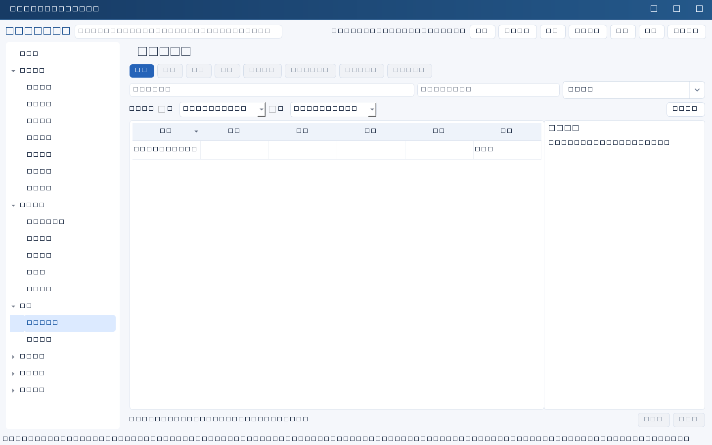
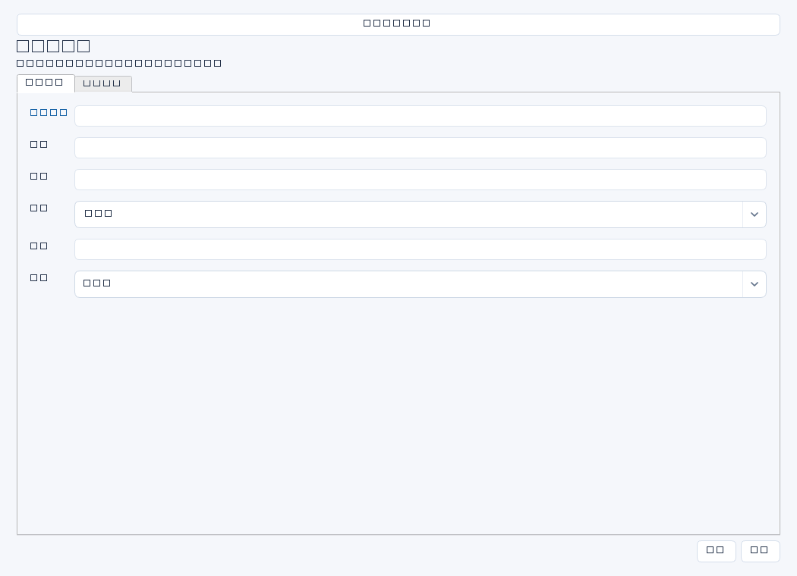

维护IT团队和协作人员的岗位、职责与能力发展资料，给责任字段提供姓名候选。这里是业务人员台账，不是账号开通、登录认证或访问控制系统。


操作步骤与资料获取
- 从HR组织名单、岗位说明书和主管确认邮件取得人员信息，核实在岗状态与职责边界；只收集工作所需信息。
- 以真实工作姓名建立记录，填写部门、岗位、主管和工作邮箱；同名人员建议在职责或岗位中说明识别信息。
- 把系统运维、项目管理、安全复核、备份恢复等职责写成具体服务范围，补充交接人和工作接口。
- 与主管商定能力发展计划，例如恢复演练、网络故障定位或合规培训；定期依据组织调整人工更新。
字段逐项说明
| 操作 / 字段 | 详细说明 |
|---|---|
| 姓名 | 显示名称，强制非空；建议使用组织正式姓名，软件不强制姓名唯一。 |
| 部门 | 实际所属组织，如信息技术部；自由文本，建议使用与组织架构一致的名称。 |
| 岗位 | 岗位或角色，如基础设施工程师；写职责角色，不把岗位当作应用权限组。 |
| 主管 | 日常工作汇报对象的姓名，可选候选或手填；不建立强制主管人员ID关系。 |
| 邮箱 | 工作联系邮箱；本模块没有邮箱格式强制校验，建议人工核对，填写邮箱不会发送邀请或邮件。 |
| 职责 | 列负责系统、服务边界、值班协作和交接要求；来源应为岗位说明及主管确认。 |
| 能力发展计划 | 列能力差距、学习/实践安排、目标时间和成果标准，如独立完成一次隔离恢复并产出演练报告。 |
| 状态 | 使用界面通用状态表达记录维护情况；不是HR专用在职枚举。建议在职责中补充在岗、调岗或离岗事实与生效日期。 |


示例（仅演示）
| 操作 / 字段 | 详细说明 |
|---|---|
| 姓名 | 陈晨 |
| 部门 | 信息技术部 |
| 岗位 | 基础设施工程师 |
| 主管 | 李明 |
| 邮箱 | chenchen@example.com |
| 职责 | 负责ERP备份、虚拟化平台和恢复演练；在岗；职责依据岗位说明V3及2026-03-20主管确认 |
| 能力发展计划 | 2026年6月底前独立完成隔离恢复，提交报告并由李明复核 |
| 状态 | 进行中 |
形成闭环
- 岗位或人员变动时核对系统负责人、任务负责人和服务交接；姓名文本字段不会随人员记录自动改名。
- 离岗权限回收另行在权限复核与任务中记录，不把人员记录状态当作禁用账号。
- 人员仍被人员ID等有效记录引用时不能直接归档；需按实际业务处理引用并保留历史。
常见误区与边界
- 误把人员台账当登录用户管理，或认为新增人员会自动开户。
- 姓名重复导致责任不清；普通姓名字段不会强制关联唯一人员ID。
- 在职责中存储身份证号、密码等与IT工作分工无关的敏感信息。